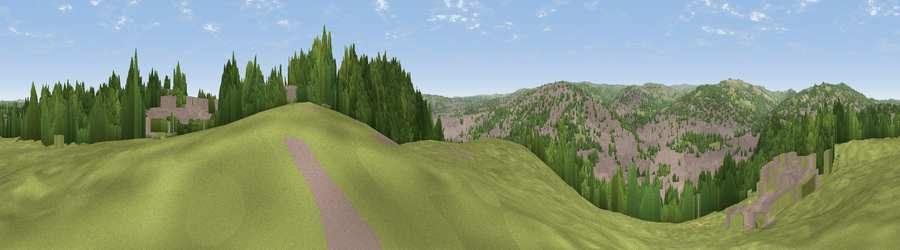

Viewpoint near Sheffield
#23847 in England · top 39% of its area beats it · near SheffieldWhere it is
The exact computed spot (SK 34825 89925). Click the marker for map links.
The view, rendered

A 360° render of this exact spot computed from the terrain model, tree cover and land cover — summer colours, afternoon light, calibrated against photographs of famous viewpoints. Real trees, hedges and buildings will differ in detail.
The panorama
Grey silhouette: terrain skyline in each direction (720 bearings, Earth curvature and refraction included). Dashed green: skyline with trees (+15 m) and buildings (+8 m) as obstacles. Blue strip: how far the ground is visible on each bearing.
Where the view opens
Wedge length = distance to the farthest visible ground on that bearing (vegetation-aware). Rings at 10, 25 and 50 km.
What fills the view
40% built-up · 34% woodland · 24% grassland · 1% cropland
Angular shares of the visible panorama (visual magnitude), not map area. Landscape diversity 0.50 (0–1 Shannon).
Key numbers
More beautiful places nearby
The staircase of upgrades: each row has a higher view potential than everything closer. Driving times are estimates from straight-line distance, calibrated against real road routing — check an actual route before setting out.
| Place | Direction | Drive | Score |
|---|---|---|---|
| Viewpoint near Sheffield | ENE · 3 km | ~8 min | 48.8 |
| Viewpoint near Sheffield | SW · 4 km | ~9 min | 57.2 |
| Viewpoint near Oughtibridge | NNW · 4 km | ~9 min | 64.8 |
| Viewpoint near Oughtibridge | NNW · 5 km | ~10 min | 70.0 |
| Viewpoint near Whitley | NNW · 6 km | ~14 min | 72.1 |
| Viewpoint near Wharncliffe Side | NNW · 7 km | ~15 min | 75.2 |
| Wild Bank | WNW · 37 km | ~55 min | 76.2 |
| Viewpoint near Carrbrook | WNW · 37 km | ~56 min | 77.1 |
53.40500, -1.47764 · source: screening · position refined by local search. Computed location — check access rights before visiting.